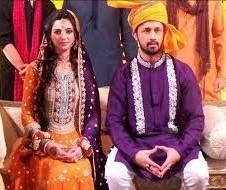
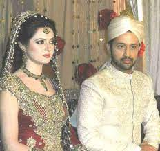
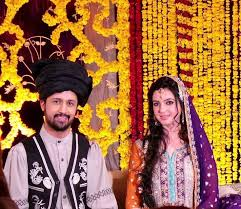
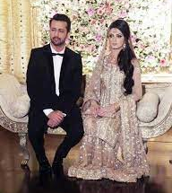

“Tajdar-e-Haram”
.jpeg)
Atif Aslam was born on March 12, 1983, into a Muslim Punjabi dialect family in Wazirabad, Pakistan. Atif Aslam is a Pakistani actor, singer, musician, and songwriter. Atif Aslam started his educational classes in kindergarten at Kimberley Hall School, Lahore. He shifted to Rawalpindi City in order to proceed with his high school education at St. Paul’s Cambridge School, Satellite Town, Rawalpindi in 1991. Atif Aslam came back to Lahore and got admission in PICS to do his Bachelor’s qualification in Computer Science.
Atif Aslam released his 1st collection named Jal Pari that was an enormous hit on July 17, 2004. In 2005, Atif Aslam received his initial leap forward in Bollywood Music Industry when the producer Mahesh Bhatt contacted Atif Aslam to look for his agreement to incorporate the song “Woh Lamhey” in his new movie, Zeher. Atif Aslam, likewise recorded numerous melodic songs for Bollywood, which were effective as well. Following his huge success of the album Jal Pari, Atif Aslam, confidently released 2 increasingly effective solo collections, Meri Kahani, and Doorie.
Atif Aslam, very initial international visit was in Canada, and the US, alongside the popular singers Annie Khalid, and Rhythm Dhol Bass. Atif Aslam then made his solo performance that resulted in a big appearance at Sovereign Bank Arena, New Jersey. It likewise highlighted famous singers such as Richa Sharma, Kailash Kher, and Amanat Ali. Atif Aslam in collaboration with Sunidhi Chauhan performed out of the blue at Hershey Center, Mississauga, trailed by another show performance at Oracle Arena, San Francisco.
He turned into the first principal Pakistani to perform at a show in London’s O2 Arena. This marvelous show results to advance love, harmony, and solidarity in between India and Pakistan. Atif Aslam performed consecutively for 4 long hours at this concert on 22 April 2012. Later on, in Dubai, he was welcomed for 3 shows at the World Trade Center in 2012. Atif Aslam was considered among the best entertainers of Dubai close by Pitbull, Gotye, Enrique Iglesias, and Evanescence for the year 2012.
In Kathmandu, Nepal, Atif Aslam is likewise recognized as the primary person from continent Asia, and stood at the 2nd position after performer Bryan Adams, to be allowed to sing inside the Dashrath Rangasla National Football Stadium. At the very launch of the show Sur Kshetra, Atif Aslam showed up as a representative of the Pakistani Team that was communicated from Dubai, where Pakistani and Indian participants went up against one another.
Atif Aslam facilitated the 16th Lux Style Awards function on 19 April 2017. It was the first occasion when Atif was viewed as facilitating the service of Lux Style Awards. Atif Aslam alongside Meesha Shafi, Shahi Hasan, and Fawad Khan was on the judge board of an across the country talent program emceed by PepsiCo Pakistan The Pepsi Battle of the Bands in September 2017. Atif Aslam’s version sequel of “Tajdar-e-Haram” had crossed 100 million perspectives engagements on YouTube on 1 November 2017. It was ended up as the very first video that published in Pakistan to accomplish the milestone record.
In 2011, Atif Aslam has made a big appearance by performing in the social film Bol. Atif Aslam has sung various blockbuster topping songs. Atif Aslam is renowned for his unique techniques of vocal belting. Atif Aslam prevalently sings in Urdu, Hindi, and Punjabi, however, has additionally sung in Bengali as well. Atif is a beneficiary of various Lux Style Awards. On 29 March 2013, Atif Aslam wedded to educationist Sara Bharwana, in Lahore.
In 2008, Atif Aslam likewise got the 4th most elevated honor Tamgha-e-Imtiaz, given to regular people in Pakistan.’ Check out exclusive ➡facts about Atif Aslam.
|  |  |  |  |